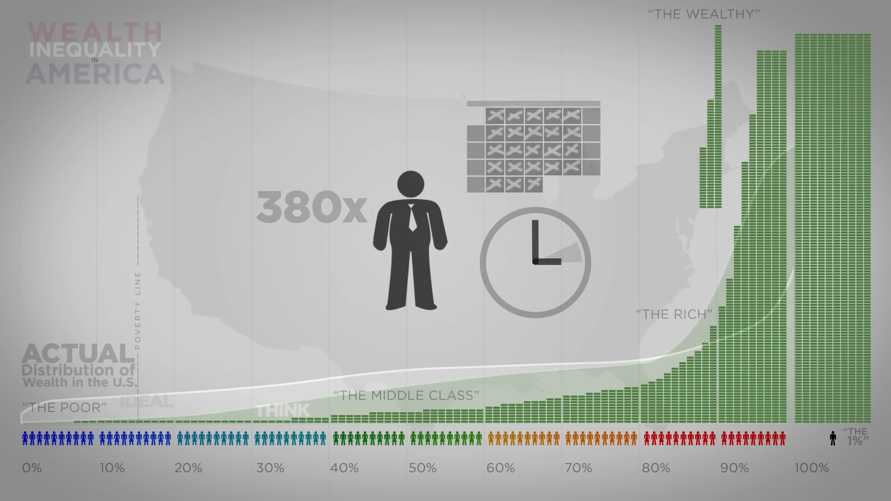
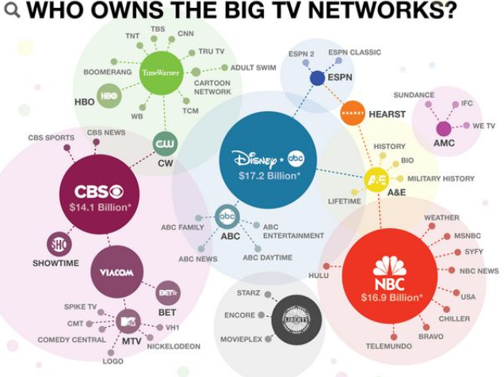
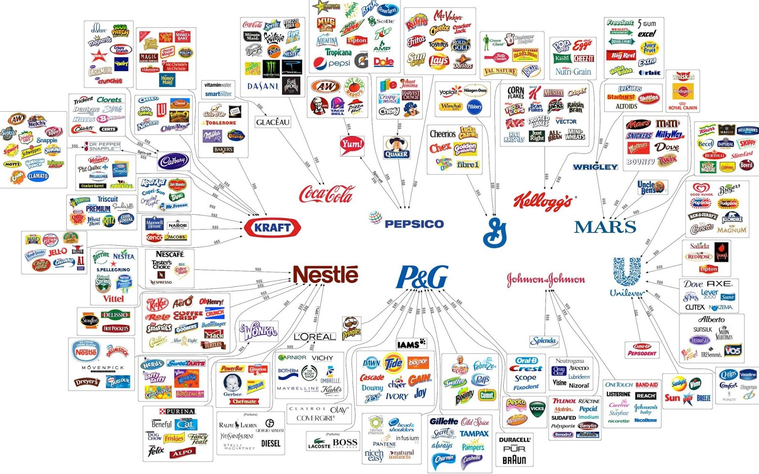

Everything Counts - Depeche ModeWhat if I told you that the working class is dying while the richer get richer? And the chart on the wall tells the story of it all!
Over the past few decades, the 1% gained more and more wealth, while the wealth of the 99% didn't gain much and lately has even stagnated!
This is a "conspiracy" that is an objective fact, and either people pay no mind to it, or they don't think that it's that big of a deal, and they're misguided for this.
When people have so much money (millions to billions), do you know what they tend to do? They buy up everything, they ate up the housing market, they invested in loans which jacked up interest increasing debt, they buy out other companies to monopolize, the list goes on.
Simply put, when the rich have tons of money, they buy up everything on us, so we don't have those things. When they buy them up, things become scarce, and also more expensive.
Reagan believed that cutting taxes on the rich would have them spend more money therefore putting that money back into the economy for everyone else. Well, it didn't work out that way in the long-term.
Maybe in the short term Reagan's economic plans may have helped out, but in the long term they most certainly did NOT. Cutting taxes and regulations on these buisnesses allowed rich people more money to spend on themselves.
They would take out loans to reinvest into their own stocks, they would form BUBBLES where companies pass all the money back and forth to each other, or they would eat up the other companies either through investing or raw power like how Walmart ate up all of the Mom and Pop shops.
The greatest conspiracy infront of us is the rich getting richer, and almost everything else is just a distraction from that.
I'm not against conspiracies, but I feel like we have real issues that we're facing, and a lot of these dumb theories circle around that distract us from the bigger issues.
Like the idea of the White Replacement Theory, or that the Jews run the planet, or that Welfare was created to harm rather than help people, or that the feminist movement was caused by the FEDs, the list can go on.
I'm honestly questioning if some of these theories were seriously created by "the powers that be" and were then propped up by social media or other internet platforms.
And yes, some theories I believe hold merit. Like there's a lot of things about 9/11 that don't make sense. There's also things about the assassination of MLK Jr. that don't make sense. But it's important to pick and choose what you believe in very carefully.
I understand that the media can be very dishonest, they're dominated by corporate interests. But if you don't trust established institutions, then you should be just as leary of what people say on the Internet.
The Jews running the planet has been a theory that has been popularized recently with America letting Israel cause all the chaos that it has.
America and Israel have a close "relationship", yes. But the rest of the world really isn't as close with Israel as what America is, it's really just Israel and America rather than Israel and the world.
I don't know every closed-door-detail about the two countries and their relationship together, but there are some things that you and I or anyone else could pick apart.
Israel is effectively a military base for America headquarted right in the Middle East. You could almost view Israel as like a "colony" for America for the purpose of having influence in the Middle East.
Therefore America and Israel are both militarily alligned by design. Now this "little colony" has definitely gotten a mind of it's own and went rogue, but that base is not something that America would obviously want to give up.
And I'm' sure that the Military Industrial Complex has a strong connection to Israel. Finanical ties such as AIPAC play a big part for sure. And if we want to get REALLY conspiratorial, maybe Epst31n was an asset to Israel, and he was a factor in all of this, but that's yet to be confirmed.
So we could look at the relationship between America and Israel from other perspectives than just "the Jews run the planet", which I bet you that THEY WANT YOU TO BELIEVE IN THAT.

The above sentence sounds like an oxymoron, but it's not. The media always portrays it like the Jews do run the media, and there's a reason.
The media will say that Israel has a right to defend itself when they're the ones attacking. The media will twist stories to make it sound like Jewish people were attacked or are the victim in a situation where they're clearly not. People realize that this is all total BS.
But this will make people think that the Jews must be running the show. Israel and the media have made life for Jews to be a living Hell. They want people to be hateful and effectively Nazis.
Those who can make you believe absurdities, can make you commit atrocities. They want people to be psychologically malleable, and turning people against each other in this way is an amazing way to do that.
I could keep rambling about this, but the point being is that they want you to think that the Jews are the problem rather than the Billionarie class and their deep state assets.
Most conspiracies are total BS, and while some are true, the #1 issue that we face is that the rich have way more power and influence than what we do.
This isn't me being salty that they have more money, but it's about what they do with that money. They buy out politicians, they dictate the government regulations, they buy up all the other assets and resources on us, etc.
Is there a solution? Well, without Divine Intervention I would say that the only things we could push for is good regulations on these businesses and higher taxes onto them.
If the government won't do as the people ask, then it seems that self-sufficiency is the best way to go.

Return to main page